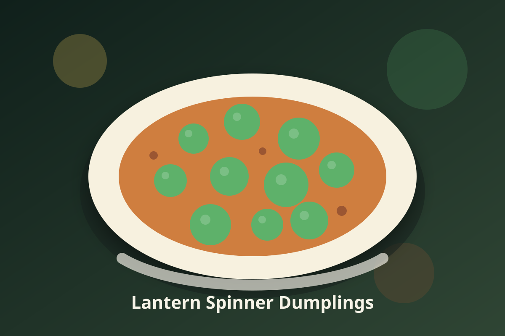

Jamaican · Vegan
Lantern Spinner Dumplings
Jamaican-style spinner dumplings simmered in a garlic, thyme, and allspice broth.

Ingredients
- 2 cups all-purpose flour
- 2 teaspoons baking powder
- 1/2 teaspoon salt, divided
- 1 cup water, for the dough
- 4 cups water, for the broth
- 2 cloves garlic, smashed
- 1 teaspoon fresh thyme leaves
- 1/2 teaspoon ground allspice
- 2 scallions, sliced
- 1 tablespoon lime juice
Instructions
- Whisk the flour, baking powder, and 1/4 teaspoon salt in a bowl. Stir in 1 cup water until a soft dough forms, adding up to 2 tablespoons more water if it is dry. Knead the dough for 1 minute until smooth.
- Pinch off 16 walnut-size pieces and roll each between your palms into a short, tapered spinner.
- Pour 4 cups water into the Instant Pot, add the garlic, thyme, allspice, scallions, and the remaining 1/4 teaspoon salt, and select Sauté (high). Bring the broth to a boil.
- Drop the dumplings into the boiling broth, stir once so none stick, and simmer the dumplings for 12-15 minutes until they float and are firm when cut.
- Press Cancel, stir the lime juice into the broth, and serve the dumplings in bowls with a ladle of the broth.